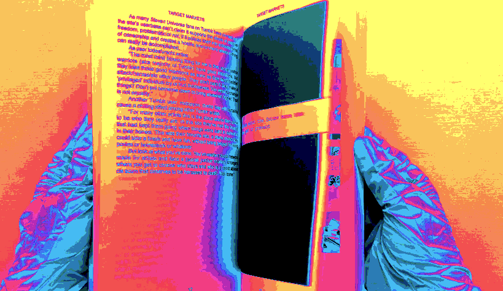
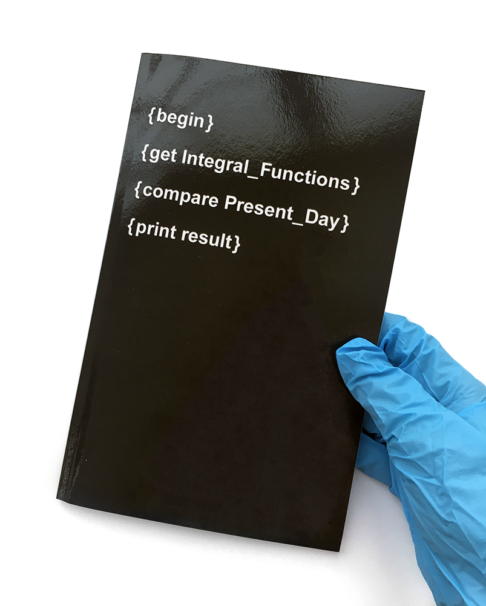

/ / / / / / / / / / / / / / / / / / / / / / / / / / /
Integral_Functions/Present_Day
/ / / / / / / / / / / / / / / / / / / / / / / / / / / / / / /
AUD $6.76
/ / / / / / / / / / / / / / / / / / / / / / / / / / / / / / / / /
Integral_Functions/Present_Day
Designed by Sarah Allinson for CDS3001 Digital Publishing
Book published on Blurb.com
2019
About the book:
Integral_Functions/Present_Day compares aspects of the internet e-zine culture of the 1990s with the present day. Specifically focused on the e-zine “Integral Functions”, published in 1996, content from the zine is contrasted with recent examples of the subject matter. In what ways has the world changed and in what ways has it stayed the same?
Details:
Published May 2019
68 pages
5" x 8" softcover trade book
ISBN: 9780368730757
From issues 1 to 4:
"Integral Functions is an electronic 'zine that covers a broad range of
obscure and experimental topics. Material within the magazine includes:
poetry, short stories, essays, rants, reviews (books, movies and music),
experimental literature (computer generated poetry, etc.), personal
philosophies, chat logs, e-mail, and ASCII artwork. Topics within each
issue are diverse and will change from one issue to the next."
From issues 5 onwards:
"Integral Functions is a bi-weekly electronic 'zine that encourages both
stylistic and topical experimentation in all possible forms of literary
self-expression."